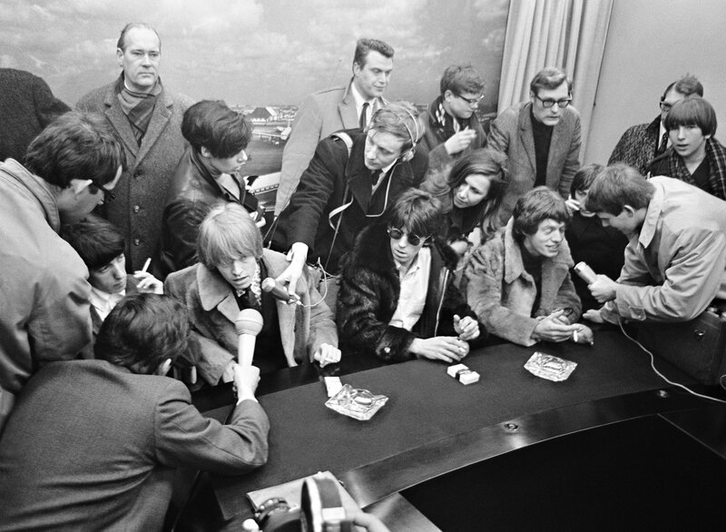
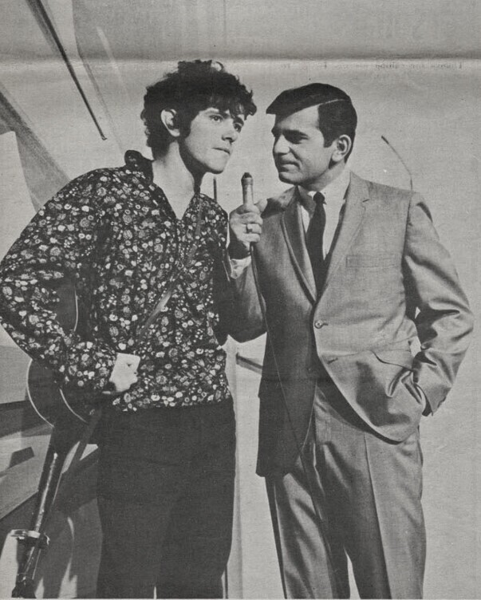
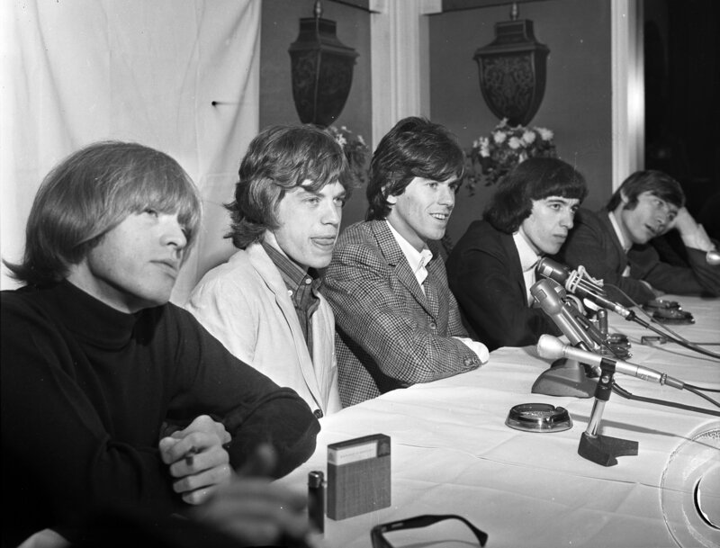
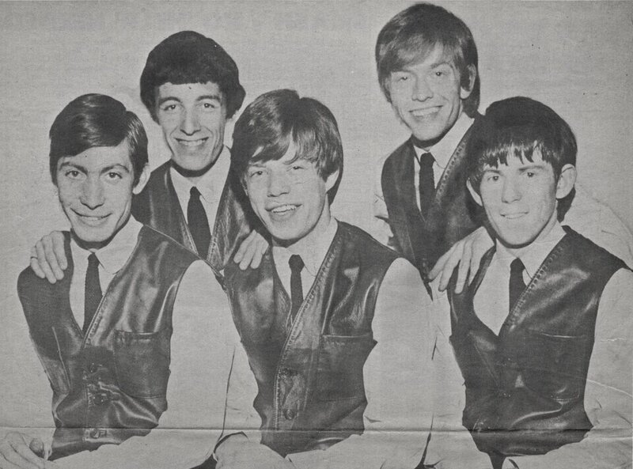

Hendrix, Stills and Miles cut an early Woodstock
Jimi Hendrix joined Stephen Stills, Buddy Miles and Duane Hitchings at New York's Record Plant, cutting an early take of Joni Mitchell's just-written song Woodstock months before Crosby, Stills, Nash & Young turned it into a hit.
Hendrix played bass guitar flipped upside down for the loose, historic jam, which finally surfaced on the 2018 compilation Both Sides of the Sky.
September 30 at a Glance
Tap any event to jump straight to its full card below.
| Category | Event |
|---|---|
| 1969 | |
| industry | Hendrix, Stills and Miles cut an early Woodstock |
| release | Rare Earth release their platinum Get Ready |
| death | Christine Hinton dies in a Marin County crash |
| 1968 | |
| release | Motown releases Love Child |
| 1967 | |
| broadcast | BBC Radio 1 launches with Flowers in the Rain |
| 1966 | |
| concert | The Rolling Stones play two shows in Glasgow |
| 1965 | |
| broadcast | Donovan makes his US TV debut on Shindig! |
| concert | The Rolling Stones play two shows in Hanley |
| 1964 | |
| industry | The Beatles finish No Reply and Every Little Thing |
| 1963 | |
| concert | The Rolling Stones play an emergency Cambridge show |
| industry | Don't Bother Me gets its mono mix |
| 1960 | |
| broadcast | The Flintstones premieres on ABC |
| concert | Eileen Farrell headlines a Vassar centennial concert |
Hendrix, Stills and Miles cut an early Woodstock
Jimi Hendrix joined Stephen Stills, Buddy Miles and Duane Hitchings at New York's Record Plant, cutting an early take of Joni Mitchell's just-written song Woodstock months before Crosby, Stills, Nash & Young turned it into a hit.
Hendrix played bass guitar flipped upside down for the loose, historic jam, which finally surfaced on the 2018 compilation Both Sides of the Sky.
Rare Earth release their platinum Get Ready
Motown released Rare Earth's second album, Get Ready, anchored by a 21-minute side-long reworking of the Smokey Robinson-written title track.
The LP went on to platinum certification, peaked at No. 12 on the Billboard 200, and spent 77 weeks on the chart, an unlikely rock crossover for a soul label.
Christine Hinton dies in a Marin County crash
Christine Hinton, David Crosby's 21-year-old girlfriend and founder of the Crosby, Stills & Nash fan club, was killed in Marin County when a cat loose in her van made her swerve into the path of an oncoming school bus.
Crosby was inconsolable, and the loss became the raw emotional core of Guinnevere, a song he had already written about her, and of his devastating 1971 solo debut, If I Could Only Remember My Name.
Motown releases Love Child
Motown released Diana Ross & the Supremes' socially conscious single Love Child, backed with Will This Be the Day and produced by the songwriting team known as The Clan.
The record sold 500,000 copies in its first week, became the group's eleventh number one, and went on to end the Beatles' Hey Jude run atop the Billboard Hot 100 that November.
BBC Radio 1 launches with Flowers in the Rain
The BBC officially launched BBC Radio 1 at 7am, with DJ Tony Blackburn welcoming listeners to the exciting new sound of Radio 1 and spinning the Move's Flowers in the Rain as the station's first record.
Created by Parliament to fill the gap left by outlawed offshore pirate stations, Radio 1 built its early roster around former pirate DJs and reshaped British pop radio for a generation.
The Rolling Stones play two shows in Glasgow
The Rolling Stones played two shows at Glasgow's Odeon Theatre, part of an Aftermath tour bill shared with Ike & Tina Turner and the Yardbirds.
The Scottish stop came near the end of what would be the band's last full UK package tour before stadium-scale rock took over.

Donovan makes his US TV debut on Shindig!
Scottish folk troubadour Donovan made his American television debut on ABC's Shindig!, performing Catch the Wind and Colours alongside the Hollies, the Turtles and the Dave Clark Five.
The appearance introduced prime-time US audiences to the acoustic British folk sound just as Bob Dylan was plugging in back home.

The Rolling Stones play two shows in Hanley
The Rolling Stones played two shows, the 6:30 and 9:00 houses, at the Gaumont Theatre in Hanley, Staffordshire, on their autumn UK package tour.
The dates came weeks after (I Can't Get No) Satisfaction had turned the band into the biggest live draw in Britain.

The Beatles finish No Reply and Every Little Thing
The Beatles wrapped two sessions in Studio Two at EMI Studios, completing the master take of No Reply in eight takes and finishing Every Little Thing, both destined for Beatles For Sale.
John Lennon played electric 12-string on Every Little Thing, while No Reply, finished with George Martin adding piano, opened the album that December.
The Rolling Stones play an emergency Cambridge show
The Rolling Stones played a non-tour show at the Rex Ballroom in Cambridge for a contracted fee of £150, per a surviving carbon-copy contract dated September 20, 1963.
Booked by co-manager Eric Easton about five weeks before the band's second single, I Wanna Be Your Man, hit UK shops, the gig captured the live demand already building around them.

Don't Bother Me gets its mono mix
Producer George Martin and engineer Norman Smith completed the mono mix of George Harrison's songwriting debut, Don't Bother Me, in Studio Two at EMI Studios.
The stereo mix followed almost a month later on October 29, clearing Harrison's first original composition for its spot on With the Beatles.
The Flintstones premieres on ABC
ABC gave The Flintstones its network premiere as the first prime-time animated sitcom, with an original musical score and theme cues by Hoyt Curtin under producers William Hanna and Joseph Barbera.
The show's music-driven format set a template for prime-time animation scoring that lasted for decades.
Eileen Farrell headlines a Vassar centennial concert
Soprano Eileen Farrell gave the ninth Barbara Woods Morgan Memorial Concert in Vassar College's Students' Building during the school's centennial year, pairing classical works by Beethoven, Schubert, Weber, Debussy and Poulenc with contemporary American songs.
The recital showcased the crossover star's range just months into a five-season run at the Metropolitan Opera, bridging concert-hall repertoire and popular song.
Frequently Asked Questions
What happened in 1960s music on September 30?
September 30 saw 13 verified music events across the decade.
They're headlined by Jimi Hendrix, Stephen Stills and Buddy Miles cutting an early take of Woodstock in 1969, plus BBC Radio 1's 1967 launch, The Flintstones' 1960 premiere, and three different Rolling Stones concerts.
What is the biggest 1960s music event on September 30?
Jimi Hendrix, Stephen Stills and Buddy Miles recording an early version of Joni Mitchell's Woodstock at New York's Record Plant in 1969 stands as the day's biggest event.
It happened months before Crosby, Stills, Nash & Young made the song famous.
Did the Rolling Stones do anything on September 30?
Yes, in three different years.
On September 30, 1963, the band played an emergency non-tour show at the Rex Ballroom in Cambridge, on September 30, 1965, they played two shows at the Gaumont Theatre in Hanley, and on September 30, 1966, they played two shows at Glasgow's Odeon Theatre.
What did the Beatles record on September 30?
On September 30, 1964, the Beatles finished recording No Reply and Every Little Thing for Beatles For Sale.
On September 30, 1963, they also completed the mono mix of George Harrison's first original song, Don't Bother Me.
When did BBC Radio 1 launch?
BBC Radio 1 launched at 7am on September 30, 1967.
DJ Tony Blackburn played the Move's Flowers in the Rain as the station's first record.
What TV show premiered on September 30, 1960?
The Flintstones made its network debut on ABC on September 30, 1960, becoming the first animated series to air in prime time.
It carried an original score by Hoyt Curtin.